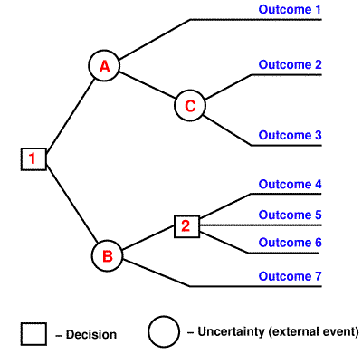
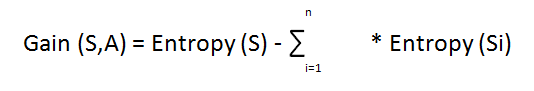

Decision Tree [Pohon Keputusan]¶
Pohon keputusan dalam aturan keputusan (decision rule) merupakan metodologi data mining yang banyak diterapkan sebagai solusi untuk klasifikasi. Decision tree merupakan suatu metode klasifikasi yang menggunakan struktur pohon, dimana setiap node merepresentasikan atribut dan cabangnya merepresentasikan nilai dari atribut, sedangkan daunnya digunakan untuk merepresentasikan kelas. Node teratas dari decision tree ini disebut dengan root.
Breiman et al. (1984) menyatakan bahwa metode ini merupakan metode yang sangat populer untuk digunakan karena hasil dari model yang terbentuk mudah untuk dipahami. Dinamakan pohon keputusan karena aturan yang terbentuk mirip dengan bentuk pohon. Pohon terbentuk dari proses pemilahan rekursif biner pada suatu gugus data sehingga nilai variabel respon pada setiap gugus data hasil pemilahan akan lebih homogen. Pada pohon keputusan terdapat tiga jenis node, antara lain :
1. Akar
Merupakan node teratas, pada node ini tidak ada input dan dapat tidak mempunyai output atau dapat mempunyai output lebih dari satu.
2. Internal node
Merupakan node percabangan, pada node ini hanya terdapat satu input dan mempunyai output minimal dua.
3. Daun
Merupakan node akhir atau terminal node, pada node ini hanya terdapat satu input dan tidak mempunyai output (simpul terminal).
Sebagai contoh suatu pohon disusun oleh simpul t1, t2, …, t4 dengan rincian terdapat 3 daun, 1 akar, dan 1 internal node. Setiap pemilah (split) memilah simpul nonterminal menjadi dua simpul yang saling lepas. Hasil prediksi respon suatu amatan terdapat pada simpul terminal (daun).

Konsep dari pohon keputusan adalah mengubah data menjadi pohon keputusan dan aturan-aturan keputusan. Pohon keputusan merupakan himpunan aturan if — then, dimana setiap path dalam pohon dihubungkan dengan sebuah aturan dimana premis terdiri atas sekumpulan node yang ditemui dan kesimpulan dari aturan terdiri atas kelas yang dihubungkan dengan daun dari path. Pembentukan pohon keputusan terdiri dari beberapa tahap :
1. Konstruksi pohon
Diawali dengan pembentukan akar (terletak paling atas). Kemudian data dibagi berdasarkan atribut-atribut yang cocok untuk dijadikan daun.
**2. Pemangkasan pohon (****tree pruning) *
yaitu mengidentifikasikan dan membuang cabang yang tidak diperlukan pada pohon yang telah terbentuk. Hal ini dikarenakan pohon keputusan yang dikontruksi dapat berukuran besar, maka dapat disederhanakan dengan melakukan pemangkasan berdasarkan nilai kepercayaan (*confident level). Pemangkasan pohon dilakukan selain untuk pengurangan ukuran pohon juga bertujuan untuk mengurangi tingkat kesalahan prediksi pada kasus baru dari hasil pemecahan yang dilakukan dengan divide and conquer. Pruning ada dua pendekatan yaitu :
a. Pre-pruning yaitu menghentikan pembangunan suatu subtree lebih awal (dengan memutuskan untuk tidak lebih jauh mempartisi data training). Saat seketika berhenti, maka node berubah menjadi leaf (node akhir). Node akhir ini menjadi kelas yang paling sering muncul di antara subset sampel.
b. Post-pruning yaitu menyederhanakan tree dengan cara membuang beberapa cabang subtree setelah tree selesai dibangun. Node yang jarang dipotong akan menjadi leaf (node akhir) dengan kelas yang paling sering muncul.
3. Pembentukan aturan keputusan yaitu membuat aturan keputusan dari pohon yang telah dibentuk. Aturan tersebut dapat dalam bentuk if — then diturunkan dari pohon keputusan dengan melakukan penelusuran dari akar sampai ke daun. Untuk setiap simpul dan percabangannya akan diberikan di if, sedangkan nilai pada daun akan ditulis di then. Setelah semua aturan dibuat maka aturan dapat disederhanakan atau digabung.
Decision tree adalah suatu model klasifikasi yang paling populer karena mudah diinterpretasikan oleh manusia. Banyak algoritma yang dapat digunakan dalam pembentukan pohon keputusan seperti ID3, C4.5, CART, dan GUIDE. Algoritma decision tree banyak digunakan dalam proses data mining karena memiliki beberapa
Kelebihan :¶
1. Mudah mengintegrasikan dengan sistem basis data.
2. Memiliki ketelitian yang baik.
3. Dapat menemukan gabungan tak terduga dari suatu data.
4. Daerah pengambilan keputusan yang sebelumnya kompleks dan sangat global dapat diubah menjadi lebih sederhana dan spesifik.
5. Dapat melakukan eliminasi untuk perhitungan-perhitungan yang tidak diperlukan. Karena ketika menggunakan metode ini maka sampel hanya diuji berdasarkan kriteria atau kelas tertentu.
6. Fleksibel untuk memilih fitur dari internal node yang berbeda, fitur yang terpilih akan membedakan suatu kriteria dibandingkan kriteria yang lain dalam node yang sama.
Kekurangan pohon keputusan adalah.¶
1. Terjadi overlap terutama ketika kelas-kelas dan kriteria yang digunakan jumlahnya sangat banyak. Hal tersebut juga dapat menyebabkan meningkatnya waktu pengambilan keputusan dan jumlah memori yang diperlukan.
2. Pengakumulasian jumlah error dari setiap tingkat dalam sebuah pohon keputusan yang besar.
3. Kesulitan dalam mendesain pohon keputusan yang optimal.
4. Hasil kualitas keputusan yang didapatkan dari metode pohon keputusan sangat bergantung pada bagaimana pohon tersebut didesain.
Berikut ini akan saya berikan contoh pergitungan decision tree menggunakan algoritma C45 yang saya dapat dari berbagai sumber, sebagai referensi anda.Baik langsung saja berikut pejelasannya
Untuk menentukan bermain tenis atau tidak, kriteria yang diperlukan meliputi:
-Cuaca
-Angin
-Kelembaban
-Temperatur udara
Salah satu atribut merupakan data solusi per item data yang disebut target atribut -> misalnya atribut “play” degan nilai “main” atau “tidak main” Atribut memiliki nilai-nilai yang dinamakan “instance” Misalkan atribut “Cuaca” memiliki instance -> cerah, berawan, dan hujan.
Berdasakan tabel diatas akan dibuat tabel keputusan untuk menentukan main tenis atau tidak dengan melihat keadaan Outlook (cuaca), Temperatur, Humidity (kelembaban), dan windy (keadaan angin).
Algoritma secara umum:
-Pilih atribut sebagai akar
-Buat cabang untuk tiap2 nilai
-Bagi kasus dalam cabang
-Ulangi proses utk setiap cabang sampai semua kasus pada cabang memiliki kelas yang sama
Memilih atribut berdasarkan nilai “gain” tertinggi dari atribut-atribut yang ada.
Perhitungan Gain¶

Keterangan: - S : himpunan - A : atribut - n : jumlah partisi atribut A - | Si | : jumlah kasus pada partisi ke-i - | S | : jumlah kasus dalam S
Menghitung Nilai Entropy¶

Keterangan: S : himpunan kasus A : fitur n : jumlah partisi S pi : proporsi dari Si terhadap S
Perincian algoritma ( langkah 1)¶
· Menghitung jumlah kasus seluruhnya, jumlah berkeputusan “Yes” maupun “No”.
· Menghitung Entropy dari semua kasus yg terbagi berdasarkan atribut “Outlook”, “Temperature”,“Humidity”, “Windy”.
· Lakukan penghitungan Gain utk setiap atributnya
Perhitungan

Perhitungan Total Entropy
Menghitung gain pada baris Outlook

Lakukan Hitung Gain untuk temperature, humidity dan windy
Sepert yg terlihat pd tabel, diperoleh bhw atribut dgn Gain tertinggi adalah Humidity -> 0,37
Maka Humidity menjadi node akar
Humidity memiliki dua nilai yaitu “High” dan “Normal”
Humidity -> “Normal” sdh mengklasifikasikan kasus menjadi 1 yaitu keputusannya “yes”
Untuk humidity -> “High” msh perlu dilakukan perhitungn lagi (karena masih terdapat “yes” dan “no”)
Pohon Keputusan Node 1
Perincian Algoritma (Langkah 2)¶
Hasil perhitungan (Langkah 2)
Didapat Gain tertinggi -> outlook -> 0,69
Maka “Outlook” menjadi node cabang dari atribut humidity yg bernilai “High”
Berdasarkan atribut “Outlook” terdpt 3 nilai
Cloudy
Rainy
Sunny
Krn “Cloudy” pasti bernilai “Yes” dan “Sunny” pasti bernilai “No”, maka tdk perlu dilakukan perhitungan lagi
Sedangkan “Rainy” bernilai “yes” dan “No”, maka masih perlu dilakukan perhitungan lagi
Pohon keputusan node 1.1
Perincian algoritma (Langkah 3)¶
Hasil perhitungan (Langkah 3)
Hasil perhitungan (Langkah 3)
Didapat Gain tertinggi -> Windy -> 1
Maka “Windy” menjadi node cabang dari atribut humidity yg bernilai “High” dan outlook yg bernilai “Rainy”
Berdasarkan atribut “Windy” terdpt 2 nilai
True
False
Karena “True” sdh terklasifikasi pasti bernilai “No” dan “False” pasti bernilai “Yes”, maka tidak perlu dilakukan perhitungan lagi
Pohon keputusan node 1.1.2
Hasil perhitungan (Langkah 3)
Berdasarkan node 1.1.2, maka:
“Semua kasus sudah masuk dapat kelas”
Sehingga pohon keputusan diatas merupakan pohon keputusan terakhir yang terbentuk
Seperti yang telah diketahui macam-macam Algoritma Decison tree ada 3 yaitu :
· Algoritma C4.5
· ID3 -> merupakan pengembangan C4.5
· CART
Perhitungan diatas adalah implementasi menggunakan Algoritma C45, semoga bermanfaat sebagai bahan referensi anda.
Implementasi¶
langkah pertama¶
untuk dapat mengimplementasikan algoritma, install terlebih dahulu paket
- sklearn dengan mengikuti perintah menggunakan pip :
python -m pip install scikit-learn- numpy :
python -m pip install numpy- seaborn :
python -m pip install seaborn- pydotplus :
python -m pip install pydotplus- pandas :
python -m pip install pandassetelah menginstall semua library, maka langsung import ke python
import pandas as pd
from sklearn.tree import DecisionTreeClassifier
from sklearn.model_selection import train_test_split
from sklearn import metrics
from sklearn.metrics import accuracy_score
import seaborn as sns
from sklearn.tree import export_graphviz
from sklearn.externals.six import StringIO
from IPython.display import Image
from sklearn.tree import export_graphviz
import pydotplus
import numpy as nplangkah kedua¶
Langkah selanjutnya adalah mengimportkan data yang akan digunakan (dan pastikan data berada dalam satu folder yang sama dengan file program yang akan dibuat)
data = pd.read_csv('balance_scale.csv')langkah ketiga¶
Setelah selesai mengimportkan data, maka berikan source code untuk menampilkan data dan menampilkan info mengenai data tersebut
#menampilkan data
data.head()#melihat info data
data.info()
langkah keempat¶
Langkah berikutnya adalah memilih kolom uji untuk selanjutnya akan dihitung hasilnya
zero_not_accepted = ['berat_kiri','jarak_kiri','berat_kanan','jarak_kanan']
for col in zero_not_accepted:
data[col]= data[col].replace(0,np.NaN)
mean = int(data[col].mean(skipna=True))
data[col] = data[col].replace(np.NaN,mean)
langkah kelima¶
Setelah memilih data ujinya, langkah selanjutnya adalah membagi data training dan data testing dengan data testing sebesar 30%
X = data.iloc[:,0:3] #memilih objek data X dengan array
y = data.iloc[:,3] #memilih objek data y dengan array
#build model & train data
X = data[['berat_kiri','jarak_kiri','berat_kanan','jarak_kanan']] #objek uji
y = data['seimbang'] #objek kelas
#split data
X_train, X_test, y_train, y_test = train_test_split(X, y, test_size = 0.3, random_state=0)
langkah keenam¶
Berikutnya adalah menentukan Entropy datanya dengan source code sebagai berikut
clf = DecisionTreeClassifier(criterion="entropy", max_depth=4) #entropy dengan 4 cabang
clf = clf.fit(X_train,y_train)
y_pred = clf.predict(X_test)
langkah ketujuh¶
Menentukan simpul root, simpul perantara, dan simpul leaf dari data yang telah diketahui nilai entropy dan ini merupakan langkah terakhir dalam tahapan mencari decision tree dari kasus ini. sorce code nya adalah sebagai berikut
feature_cols = ['berat_kiri','jarak_kiri','berat_kanan','jarak_kanan'] #kolom yang diuji
#mengelompokkan data ke dalam kelas
dot_data = StringIO()
export_graphviz(clf, out_file=dot_data, filled=True, rounded=True, special_characters=True,feature_names = feature_cols,class_names=['B','R','L'])
#visualisai pohon keputusan
graph = pydotplus.graph_from_dot_data(dot_data.getvalue())
#menyimpan hasil visualisasi
graph.write_png('keseimbangan.png')
Image(graph.create_png())
dan pada tahap ini akan memunculkan gambar yaitu grafik pohon atau decision tree-nya seperti berikut

Referensi¶
Breiman, L., Friedman, JH., Olshen, RA., Stone, CJ., 1984, Classification and Regression Trees, Chapman &Hall/CRC, New York.
Mubarok, Muhammad I., 2018, Pohon Regresi dengan Pendekatan Generalized Unbiased Interaction Detection Estimation (Guide) untuk Data Multirespon, Skripsi, Program Studi Statistika FMIPA UGM, Yogyakarta.
Firmani, Alfina N., 2016, Penyelesaian Regresi Semiparametrik dengan Menggunakan Regresi Random Forest, Skripsi, Program Studi Statistika FMIPA UGM, Yogyakarta.